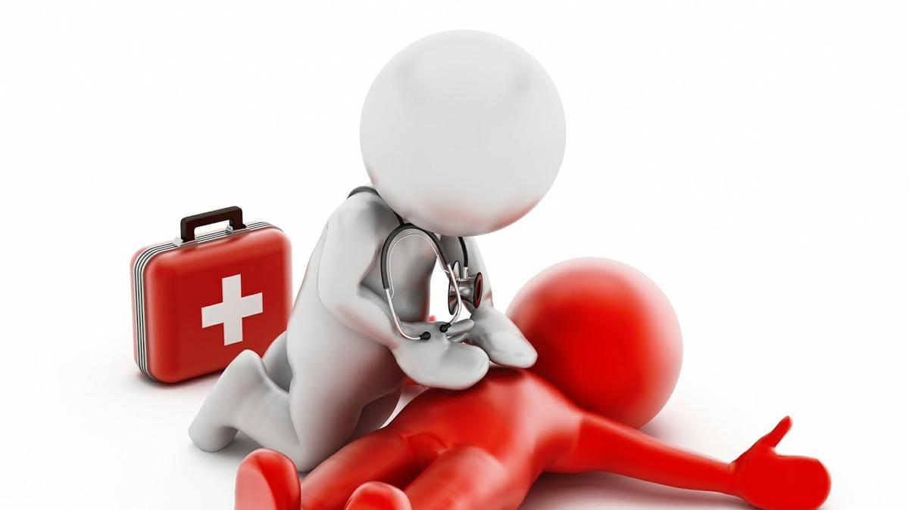

Медична допомога постраждалому
Домедична допомога в умовах воєнного стану: що потрібно робити

Щодня рашисти завдають ракетно-артилерійських ударів по українських містах, цілеспрямовано знищуючи місцеве населення та руйнуючи об’єкти критичної інфраструктури.
Через терористичні дії армії рф зростає кількість жертв серед цивільного населення України. Тому сьогодні вкрай важливо володіти базовими навичками першої домедичної допомоги, які допоможуть врятувати чиєсь життя.
З цією метою Міністерство охорони здоров’я України нагадує основні правила домедичної допомоги для цивільних.
Перша меддопомога — комплекс невідкладних медичних заходів, які проводять людині впродовж перших хвилин після настання екстреної події до прибуття бригади медичної допомоги.
Алгоритм надання допомоги:
Надавайте допомогу лише за умови, що це безпечно для вас. Пріоритет — власна безпека. Для цього огляньте місце події та переконайтеся, що вам нічого не загрожує. За можливості потрібно перемістити потерпілого в безпечне місце.
Оцініть стан постраждалого. Передусім потрібно звернути увагу, чи людина притомна та чи дихає. Щоб визначити, чи людина у свідомому стані, можна звернутись до неї із запитанням. Не можна натискати на частини тіла пораненого для того, щоб визначити його стан. Нормальне дихання — це не менше як 2-3 видихи за 10 секунд. Якщо постраждалий при тямі, то нагальної потреби перевіряти пульс та дихання відразу немає.
Одразу ж потрібно викликати бригаду швидкої медичної допомоги за номером «103». Якщо є така необхідність, також потрібно викликати інші екстрені служби (ДСНС та Нацполіцію).
Зупиніть критичні кровотечі.Для цього використовуйте кровоспинний джгут або турнікет, або тугу пов’язку з підручних засобів. Накладайте джгут та турнікет максимально високо на кінцівку. Свідченням того, що турнікет/джгут накладений правильно, є зупинка кровотечі. Також важливо зафіксувати час накладення. За відсутності засобів для зупинення кровотечі, тисніть на рану. Важливо: не припиняйте тиснути на рану до моменту приїзду медиків або накладання кровоспинного джгута/турнікета.
Потрібно забезпечити прохідність дихальних шляхів. Якщо в потерпілого в роті є видимі сторонні предмети, кров, блювотні маси, приберіть їх для відновлення прохідності дихальних шляхів.
Якщо навіть після зупинки кровотечі та забезпечення прохідності дихальних шляхів у пораненого не з’явились ознаки життя, необхідно розпочинати серцево-легеневу реанімацію (СЛР). Для цього потрібно покласти постраждалого на спину. Для проведення СЛР потрібно натискати посеред грудної клітини двома руками, основу однієї долоні потрібно накрити другою долонею. Глибина натискання має становити 5-6 см. Частота натискань має — 100-120 на хвилину.
Якщо постраждалий непритомний, слід його тримати у стабільному боковому положенні до приїзду медиків. Не можна залишати постраждалого самого. Навіть якщо кровотеча зупинена, поранений у свідомому стані може захотіти зняти джгут чи турнікет, адже йому боляче.
Детальніше про алгоритми домедичної допомоги — у відеокурсі за посиланням.
За матеріалами: